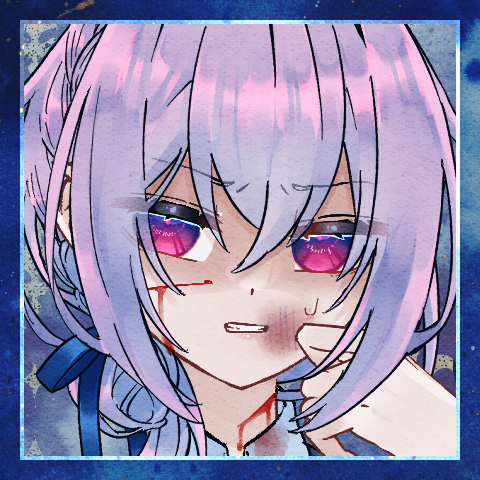
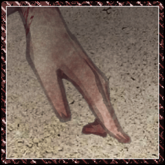
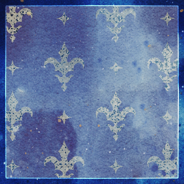

GM
果たしてこの世界の、どこに在るものでございましょうか。
GM
Dead or AliCe
「救世主の救世主」

GM
救世主の一撃が、救世主の頭蓋を砕く。
GM
振り下ろしたバットを握った手に、確かで間違いのない、手応え。
GM
ここはある救世主の統治する街。
その中心に繰り広げられた裁判の最中。
GM
救世主と救世主が巡り会えば、必然に引き起こされる戦いの結末。
チバ
「死ねッ……死ね……死ね死ね……ッ……！！」
馴れない。本当に馴れない。一個良い事教えてやる。
死ねとか簡単に言うもんじゃない。死ねが安くなるから。
いや、早く死んで欲しい。死んだのか？
わからない。いや、答えは出てるだろ。見……見たくないな。
GM
この世界において、死の価値はこの上なく、安すぎるほどに安すぎる。
GM
あなたの願いは十全に果たされ、眼下に横たわる救世主の――
GM
指先一つ動かさなくなった。
肉塊と成り果てた、かつてはあなた達と同じ、言葉を発し動くものであった存在。
GM
潰された頭から、石畳に血がゆっくりと広がっていく。
GM
少し前までは生きていたはずの存在。
あなた達を策にかけ、命を奪わんとした救世主が。
チバ
息を吐いた。……ナメやがって。
手が白い。強く握り過ぎている。
金属バットで球打った時並みに指がしびれてる。
「多淵さん。クラレさん……」
「多分……終わりましたよ」
ラサ
拍手している。街路の建物の壁に半身を寄りかからせて。
ラサ
「素晴らしい！ この世界から破綻がまた1つ取り除かれたというわけだね！」
チバ
「多淵さん大袈裟っすね……」
「クラレさんは冷めてますね……」
クソ……ほどほどってやつが無いのかよ。
ラサ
声には消耗が滲んでいるが、いつものように泰然とした口調だ。
ラサ
「まあ、ボクらは大げさな肩書を持っているからね、そもそもが」
ラサ
「大げさなことを言うぐらいでちょうどいいんじゃないかな！」
クラレット
動かなくなった相手からコインを拾い上げる。
もうこれは相手のものではない。
GM
殺意の応酬には終幕が訪れ、主を失った街は静まり返っている。
GM
少し離れた場所からは、あなたたちの様子を恐る恐るに窺う末裔たちの姿が――
ラサ
「くっ！ 急に馬脚を表すじゃないか！ 世界め！」
GM
足元に転がる救世主の骸、血の匂いばかりはその濃さを残して。
クラレット
幻覚。それを操る新たな救世主の到来。
あるいは今倒した救世主が見せていた幻覚が解けたか。
ラサ
「あああああ！！やはりこの世界はメロン色の水槽に浮かぶ脳が見ている夢だったんだああああ！！！」
GM
悲しいことに、ラサが叫ぶような鮮やかな色彩とは裏腹の。
チバ
ビビっている。多淵さんよくこうなるんだよな。
GM
果てのない荒野が、救世主たちの視界に広がる。
ラサ
「大丈夫みんな？ 今認識のズレを修正する薬を投与するからね」
チバ
クソ、ちょっと可愛いから油断してしまう。
普段だったら絶対近寄らないタイプの女だぞ……。
クラレさんもツッコめよ……クソ……俺がおかしいのか？
クラレット
「薬は効いたみたい。清々しい表情になったわ」
単にメントールの味に影響されてのことだろう。
チバ
「わかりません。何も無い事だけは確かですけど」
ラサ
「ボクたちはどこにいるんだ？ それともどこかに飛ばされたと錯覚しているんだ？」
GM
乾いた風が吹いている。
あなたたちが訪れたはずの街は、もはや影も形もない。
クラレット
「街だと思っていたのはさっき死んだ救世主の見せていた幻だったか」
ラサ
「知らないのかい？ 埼玉は日々鳥取に乗っ取られているんだ」
ラサ
「しかし、今にして思えば、あれもこの堕落の国の陰謀が噛んでいたのかも知れない……」
チバ
「埼玉と鳥取めっちゃ距離ありませんか？」
どうやって繋がってるんだよ。クソ、気になっちゃうだろうが。
クラレット
彼らの話を聞くでもなく聞きながら辺りを見回している。
ラサ
「ここにラップトップがあれば、埼玉と鳥取が実質的に同一の県であることを証明できるんだけど……」
GM
埼玉を想うたところで、陰謀を問うたところで。
あなたたちが突然に荒野に投げ出されたことは紛れもない事実。
チバ
「とりあえず歩きましょう……じっとしてても仕方ない気がします」
ラサ
「そうだね。書き割りにぶつかるかも知れない」
GM
思えばあの街にいた末裔たちも、どこか空虚で覇気がなかったような。
なんてことを今更思い返しても、もはや仕様のない事。
GM
そもそも覇気ある末裔なんて存在が珍しい。
この世界の民は誰も彼もが疲弊している。
GM
訪れる先訪れる先で、あなたたちは救いを求められてきた。
ラサ
「君は忘れてしまったのか？ まさかそんな。“干渉”を受けでもしない限りは……」
GM
望むと望まざると、あなたたちの旅路は常にその延長線上にある。
チバ
「いや、そんなカンショウに浸るような思い出じゃないし……」
チバ
「ていうかクラレさんもうだいぶ進んでませんか」
追いかけて走った。砂が靴に入った。嫌だなあ。
ラサ
「待ちたまえ～。あまり離れないほうがいい。“奴ら”の思うツボだ……」のろのろと追いかける。
GM
思い出したくもない思い出ばかりが積み重なる。
GM
靴先に伝わる砂の感触のように、虚しさが常に付きまとう。
GM
熱を孕んだ風が吹き付け、乾いた砂が身体を叩く。
目に痛みが走り、舌にはざらついた感触が張りつく。
GM
厳しい裁判を潜り抜け、得られたのはいくばくかの６ペンスコイン。
救いはない。祝福もない。
徒労と疲労ばかりを背負いながら、歩みを進めるその先に。
GM
常にちらつく影がある。
出会うことになるものを知っている。
GM
白と黒の入り交じった影が、あなたたちの視界を横切った。

メル
けれど少しめずらしい、荒野にはとても似つかわしくない、
奇妙に整えられた衣装のさま。
メル
これもどこか珍しい、
媚びる色のないその眼差しが。
ラサ
「迷った救世主の前に出てくる小綺麗な白兎。さすがに都合が良すぎる」
クラレット
「とはいえ見逃すわけにもいかないでしょう」
チバ
そ、そうか？多淵さんいっつも陰謀の話するからな。
「うわっ喋った」
メル
「ちょっと、都合がよすぎるかも」
あなたたちの様子を見回して。
クラレット
「そうね。街が消えてしまって休むところもないし」
ラサ
「こうしている今も世界は陰謀によって脅かされ、堕落しつづけているのだから……」
チバ
「お、俺はそこまでじゃないですけど困ってます」
メル
ラサの言葉に首を傾げましたが、チバに言われて気を取り直します。
メル
「では――お導きしましょう」
胸に手を当て、どこか洒落込んだ様子に。
メル
「ぼくたちの願いを、ひとつばかり、聞き届けていただきたいのです」
チバ
「……ど、どうします？」
主体性の無さを発揮。
ラサ
「待て！ みすみす他人の用意した物語に乗るというのか？」
クラレット
「身なりからするに、他の救世主の庇護を受けているわ」
クラレット
「『次の責務』にも都合が良い。お互いね」
ラサ
「気は進まないが、他に代案を示せそうもないな」
荒野を見渡した。
チバ
どうしよう。え？クラレさんは行きたそうだ。マジで？
多淵さんは、どっちだ？
いや、これ多分なんだかんだ行くパターンじゃないか？
俺はどっちでもいいです、俺は合わせます。
いや、二人の意見が対立したら俺が決めるパターンじゃん。
それはちょっとな。ちょっとな。
よしまとまってる。よし。これではいって言うだけでいいぞ。
よし。
「俺は……二人に合わせますよ」
メル
チバの言葉を受けて、ラサとクラレットを見ます。
ラサ
チバくんは自分の意見というものを持ったほうがよいなと思うな
ラサ
「ここで三人バラバラになることがもっとも危険だ。三人で“おもてなし”とやらを受けることにしよう」
メル
「ありがとうございます。
……それでは、こちらに」
メル
やがて、荒野にありふれた瓦礫の山へと辿り着く。
ラサ
怪しい布団や怪しい壺や怪しい石など買わされないように気をつけるのだよ。そのために僕が紹介したいのはこの指輪だ。この指輪は身につけているだけで人からの悪意やサイキック・アタックを防いでくれるんだ。
クラレット
それを買ったら怪しい壺や石を買わされるのと同じことにならないかしら？
メル
救世主さまはすばらしいものをお持ちなのですね。
チバ
「まさか、実は違うんですか？」
指輪良いな。いや、こんなの付けてたら生活指導に呼ばれるだろ。
メル
「そうですね」
答えて相槌、
それから六ペンスコインを一枚取り出す。
ラサ
一見して瓦礫の山のようだが、もちろん、本当に瓦礫の山である可能性もあるし、実は瓦礫の山ではない可能性がある──ボクが言いたいのは、つまりそういうことさ。
メル
一目でわかる、救世主から与えられた貨幣。
それを使って、瓦礫へと何かを刻み込むように描くと。
GM
少しばかり栄えた村が、蜃気楼のように現れる。
ラサ
「フ、やはりね」さも全てを悟っていたかのような口ぶり。
チバ
「す、すごい……」え？もしかして知ってたんですか？の顔
GM
末裔たちは、一見して数十人。
家があり、畑があり、営みがある。
幻のように現れた生活のさま。
クラレット
この世界じゃ、目に見えることのどれだけが信じられるかわかったものではない、といつも思う。
メル
その多くのものが、この白兎と同じようにきれいな身なりをしていて。
エール
その中にひとりだけ、ひどく汚れたものがいる。
エール
座り込んだその膝元には、兎たちが気持ちよさそうに眠っている。
その頭を撫でてやりながら。
メル
「はい。戻りました。
……この方々は」
あなたたちを振り返る。
クラレット
彼、か、彼女か分からぬ者をじっと見る。
獣の耳、尻尾、翼、甲羅、蹄。
そのどれかがないかと。
エール
そういった特徴は見当たらない。
ただひどく見窄らしいその姿の一方。
チバ
もてなされに来ています。
見る限りでは一番偉そうなのにな。この人。
エール
人の命を奪ってきたものとしての、業がそこにある。
エール
立ち上がる。
膝の兎を一匹抱き上げてやりながら。
エール
一匹は起こしてやり、頭を撫でて、好きにゆかせる。
ラサ
この場所を用意したのはおそらく救世主の力によるものだろう。ではなぜ一番みすぼらしいのか。いくつか理由が浮かぶ。
エール
「いらっしゃいませ、救世主さまがた。
……ご案内するよ」
エール
「この村には……名前だとかは、べつにないけれど」
エール
「わたしはエール。このような形ですが、救世主だ」
チバ
「……チバです。よろしくエールさん」
反射的に名乗った。ならエール村なのかな。
絶対攻撃されると思ったのに、何だ？この人。
クラレット
「……クラレット。救世主さまなどと、敬称は要らない。私たちは対等な立場のはず」
エール
ラサが名乗らないのはあまり気にせず、クラレットに緩慢な相槌を打ちながら。
エール
「こんなふうに暮らしていると、なんだか、うつってしまって……」
ゆったりとした足取りであなたたちを導く。
周囲の兎たちがそれに追従し、あるいは先行し、準備を始めたがる気配がある。
それらを全て好きにさせている。
エール
「なにがしかは起こり、だれがしかの糧となるだろう」
GM
ありがとうございました。
導入シーンは以上です。
GM
https://ssproject.lsv.jp/cgi-bin/doa_sheet_gm.html?id=dx3bc5RgW601Mm8yZwNLYh2VSy5WiW2F3YuIND_MTUc
GM
どういうふうにしますか？ もてなされはスキップしてしまいますか？
チバ
流れで……当たって行きます 表振って行きますね
GM
1 村の入り口。粗末ながら見張り台が立っており、村の内外を見渡せる。
GM
栄えた村、というわけではないんですが、まあまあ活気が満ちたふうです。
GM
エールにまとわりつく子兎たちもいれば、今も何やら仕事をしている兎たちもいる。
GM
先の出来事を思えば、それすら疑って然るべき、と考えてしまわざるを得ないのだが。
チバ
村の入り口から外の方を見返した。
荒野が見えるような、このまま逃げ出したくなるような。
実際にマジで誰かが居る、敵対するかも、
ってなると、活躍しようとかやってやろう！とか。
そういうのじゃなくて逃げたくなるんだよな。
「エールさん。村の外ってどうなってんですか」
村長に案内してもらっている村人の気分だ。何か。
エール
「荒野だねえ。
このあたりは、どうにも、ものが少ないから」
兎にせがまれて手を繋いでやっている。
エール
「あまり救世主も来ない。
こんな風に、連日で来られるのは、珍しいことだ」
チバ
来ないんだ。来ないなら稼ぐの大変だろうな。
来ないってことはあの兎、罠か？
「兎たちに呼び込ませてる、とかなんですか？」
今、俺たちのこと罠にかけてますか？
俺、罠にかかってます？
「まあ、なんか。普通にもてなされてちょっと肩透かしなんですけど」
エール
「あの子がそのように、望んだから」
振り返る。チバを。
その先、さらに後ろにいる、あなたを導いた白兎を。
「わたしは、あの子がかわいい。あの子たちがかわいい。
望みをかなえてあげたくなる」
エール
救世主が穏やかに答える一方で、兎たちの活気の声が響く。
チバ
あー。煙に巻かれている。兎たちがやりたがってるんです？
自分の意志は関係ないってか。本当にんなわけあるか？
煙に巻かれている。
そう、多淵さんとかクラレさんがよくやるやつ。
素直にそうですとか、はいとか言わない。
言葉として言っててもそれは表面的な話で、俺が見たい真実とか。
そういうのを遠ざけて簡単な話で誤魔化す。
「率直に聞きますけど」
エール
一度足を止めて、改めてチバを見る。
それからクラレットとラサの二人をも。
エール
「"おもてなし"の前には、聞いておきたい？」
エール
みなさまお腹を空かせているのだと思ったけれど、と、首を傾ぐ。
チバ
だってそうだろ。
優しそうなヤツの事ぶん殴るの躊躇うだろ。
悪い奴であれよ。せめて。
チバ
クソ、悩むなよ。高笑いしてそうだよ悪い奴ですって言えよ。
調子狂うな。今日相手にした奴の事を思い出す。
そういえば最初から襲い掛かって来た気がする。
「騙されてそうだったら飯食うの躊躇うでしょ……」
「エールさん的には違うんですか」
エール
「あとから知ったら騙されたにはなるかも、というか」
エール
ねえ、と、子兎に同意を求め。
んー？ と子兎は小首をかしげ。
GM
ねー！ と兎同士頷き合い、笑い合って駆けていく。
チバ
長閑だ。信じがたいほどに。
ここまで長閑だと自分の方がおかしいような気がしてくる。
いや。俺は普通だ。それは間違いない。
GM
少し前までいた荒野の、厳しい風の吹き付けるさまが、幻であったかのように。
チバ
「ただ。やっぱ俺はあんたのこと信用は出来ませんよ」
線を引く。
呑まれるな。
ペースを維持。
平常心を保とう。
罠に違いない。
間違いない。
決めつけ。
「飯は要らないです。あんたに施される気はないです」
チバ
騙されていると思う。
才覚の影を疑う。
お前、嘘ついてるんだろ。
チバ
「見てる。
監視する。
お前が多淵さんとかクラレさんに危害を加えないか」
「やったら殴る」
チバ
「俺はやると思ってる」
「普通、急にもてなすようなヤツ居ないでしょ」
チバ
やっぱりそうだ。
裏があるんだ。こいつも。
俺は騙されない。普通に考えれば。
普通に考えれば正解はわかるはずなんだ。
▷才覚を猟奇で判定して抉ります。
エール
Choice[猟奇,才覚,愛] (choice[猟奇,才覚,愛]) ＞ 愛
エール
2d6+4=>7 判定（＋愛） (2D6+4>=7) ＞ 7[4,3]+4 ＞ 11 ＞ 成功
エール
＊使うか。ヤリイカエリート使用。
合計-8で。
[ エール ] ヤリイカエリート : 2 → 1
[ チバ ] ティーセット : 1 → 0
[ エール ] HP : 25 → 24
チバ
2d6+4+2-8=>7 判定（＋猟奇） (2D6+4+2-8>=7) ＞ 5[4,1]+4+2-8 ＞ 3 ＞ 失敗
エール
まあ、でも、惑うでもなく。傷つくでもなく。
ボロボロの姿はなのは元からで。
あなたへと向ける視線は、あくまでもどこまでも、フラットで。
エール
普通のものを見るのと同じ、そういう眼差し。
エール
「救世主さま……ああ、ええと」
ない方がいいんだっけ。さまは。
そういう風に思い出すように、それも自然体に。
エール
「救世主をもてなそうとした時のリアクションは、大きく分けるとふたつあって」
エール
どこか間の抜けた雰囲気をそのままに。
あなたの探る策謀の気配はどこにもなく。
エール
ただこの状況を一般化して、通常の一幕として収めてしまう。
エール
「今のチバくんのように、あからさまに疑いをかけてくる者」
エール
「とりあえずは流れに従って、差し出された利益だけは享受する者」
エール
「だいたいその２パターンで……あ、たまに、全然疑わない救世主もいるか……」
チバ
結局。
多分俺はテロリストが教室に来てもこんな風だ。
状況に呑まれている。空気を読んでしまっている。
エール
救世主同士。
いつかの殺し合いが定められた者同士。
その間に流れる空気としては、安穏としすぎている。
チバ
何か始まるんだから先手を取って、先読みして。
何か流れを変えようと動いたところで。
最初からそれすらも織り込み済みの範囲だ。
既視感を打ち破ろうとして変な行動をとったのに、
既視感が破られた先に向かっては進めない。
既視感の中にからめとられている。
「……」
じゃあ更に、常識はずれになるしかないのか？
「ならどっちもやる。飯は食います」
エール
「そう。良かった」
すこし安心したように笑った。
その安堵がどこから来るものか。
あなたに推し量れるものかは分からないけれど。
エール
「騙したとかになるのは良くないし、言っておいた方がいいのかな」
チバ
「言わなくていいです」
遮った。もう被害者ぶるしかないんだから。
エール
「……二人は？」
クラレットとラサを見ます。
チバ
「二人に直接聞いて下さいよ……
多淵さんとクラレさんのこと俺よくわかんないんで」
エール
「じゃあ、振る舞う前に訊く……そうするときみの耳にも入ってしまうか……」
チバ
「監視は続けますけど」
言いつつ進んだ。2人はどうするつもりなんだ。この状況。
〆
ラサ
どうしようかな。シーンとしてはチバとエールから離れてクラレットと二人で話す感じにしたいです。
GM
村はまあまあ活気があります。
堕落の国にしては、ですが。
栄えているという感じではないけれど、生活の気配がある。
ラサ
「一見して、みな充足を感じているように見える」
ラサ
「しかし……君たちは騙されている！！！！！！！！！！」
ラサ
手近な末裔に絡んで根拠のないことを言っている。
ラサ
「そうだ。こんな場所が堕落の国にあるというのがそもそも不自然なんだ」
ラサ
「救世主というのは基本、何かを企んでいる邪悪な存在だからね」
ラサ
「何か政府[？]や闇の組織[？]と黒い地下水脈が流れ、利益を享受しているに違いない……」
ラサ
「君はわかるよね？ クラレット」わかるということにしようとしている。
クラレット
「あの救世主も何かの目的があってこの村を経営していると」
クラレット
「そして利益を回収している。どこかから」
クラレット
「決して親切だけでしていることではないだろう、と言いたいのね。ラサは」
ラサ
どのような利益かはわからないが、何かがあるに違いない！
ブランチ
「なら簡単さあ」合点が言ったように手を合わせて。
ブランチ
「愛してくれてるから、してくれてるの！」
ラサ
何が面白いのかひとりでけたけたと笑っている。
ブランチ
けたけたと笑うラサに、同じように笑いを返して。
ブランチ
「それで、今が、こう！」ぱ、と腕をひらく。
ラサ
口元だけを笑いの形にしたままクラレットを向いた。
クラレット
救世主エールは愛のためにこうして慈善事業をしているのかどうか。
クラレット
「……信じなくもない。愛でなせることもある」
ラサ
「まあ、仮に、仮に……何かを救いうる偽りのない愛があるとして……“ここ”がそうだとはボクは思わないけどね」
ラサ
「救世主というのは、死か狂気によって約束を違えることが定められている存在だから」
ラサ
「いずれ失われることが約束される愛は、無責任なまぼろしと言ってもいいんじゃないか？」
ラサ
「ボクこそが永遠不滅の真実！！！！！！！！！！！！」
ラサ
「それ以外はぜーんぶ偽物！！！！！！！！！！」
クラレット
「ラサが本当の救世主ならそうなのかも」
ラサ
「自明のものをわざわざ確認する作業だ。冗長で嫌になるね」
ラサ
「このボクがいる限り、少なくとも不確かでないものについて苦悩する必要がないのだから！」
クラレット
「そうね。ラサが本物の救世主なら、最後まで着いていけば間違いないわ」
ラサ
というわけで判定しようかな。何を舐めるんだ？
ラサ
これどっちも舐められそうじゃないっすか？どう？
エール
Choice[猟奇,才覚,愛] (choice[猟奇,才覚,愛]) ＞ 才覚
[ エール ] HP : 24 → 23
[ エール ] ティーセット : 3 → 2
エール
2d6+0+2=>7 判定（＋才覚）+ティーセット (2D6+0+2>=7) ＞ 3[1,2]+0+2 ＞ 5 ＞ 失敗
ラサ
こういう、大仰でセンセーショナルな物言いをすることで相手を物語に取り込むのが陰謀家のやり口なんだよ。今日はそれを覚えて帰ろうね。愛で判定します。
ラサ
2d6+0=>7 判定（＋愛） (2D6+0>=7) ＞ 6[5,1]+0 ＞ 6 ＞ 失敗
ラサ
永遠不変の真実の体現たるボクの言葉に何かしら感銘を受けたり受けなかったりしていただくか。
クラレット
なるほど、こうして連れ立っていれば安心なのだろう。
クラレット
あたしも、正しい側に立てるということで。
それはとても好都合だった。
クラレット
大人しくしているだけで物事が進むのはありがたいわ。
[ クラレット ] 賢しらな瞳 : 0 → 1
GM
もてなしの場へと案内されるため、活気ある村を歩く最中に。
ジンジャー
釣られたように飛び出した兎が一匹、転がったその背にもう一撃。
メル
「ジンジャー！」
唯一、白兎だけが慌てて一匹の腕を掴んだ。
GM
興奮気味の兎たちが、襤褸を纏った救世主へと群がりゆく。
GM
髪を掴んでは皮膚を齧り、布切れを引き裂いて。
ジンジャー
「なんにもいいことないのに、こんなにしてくれるなんて」
チバ
どうなるんだ。固唾を飲んで見守る。
何かあってからやればいいんだ。
何かがあるまでは、待ってればいい。
GM
少なくとも彼らにとっては、”何か”ではない。
GM
村の活気はそのままに。
お祭り騒ぎの狂乱が。
のめやうたえと言わんばかり。
メル
「ずっと前、とうに前に。
さっきまでのあなたたちのように、あの人を、疑った」
ジンジャー
「調子に乗ったんだ、ぼくたち。正しくは」
ジンジャー
「なんでも許してくれる！
なんでも受け入れてくれる！
なんでも愛してくれる！」
ブランチ
「こんなにも認めてくれて、こんなにも愛してくれて」
ブランチ
「こんなにも、与えてもらえることなんて」
ブランチ
「ぼくたち、ぜんぜん、知らなかったのだもの」
メル
「喰らい、貪り尽くし、果てなく求めては、飽きもせず」
メル
救世主たちを振り返る。
血の匂いが風に乗って漂う。
メル
「ぼくたちのお願いを、聞いてほしいと申し上げました」
メル
「……その内容を、聞き届けてはくださいますか」
ラサ
「どうするもなにも、すでに後戻りできないところまで来ていないかい？」

クラレット
「手短に。それからこの不愉快な宴を即刻取りやめて」
メル
「ぼくたちは、もう、駄目だから。
あのひとを喰らい尽くすことしか、できないから」
ジンジャー
「でもね、愛してるんだよ！
いっぱいいっぱい愛してくれたから、
ぼくたち、試したくせ、あのひとを愛してるの！」
ブランチ
「でも、たぶん……止まれないから。
止められないから。
同じくらい力のある、救世主さまじゃあないと、きっと」
GM
殴打の音は止み、けれど、狂喜の声ばかりはずっと続いている。
エール
血塗れ泥まみれに、折れた腕で兎たちの頭を撫でている。
その腕の中、守り切った幼い兎を抱いて。
GM
手を血で濡らした兎の一匹がその子兎を受け取って、抱きかかえる。
びっくりしたねえ、なんてあやしてあげて。
クラレット
「……殴って引き摺ってでも連れ出せということね」
チバ
ゲームで見たことがある。
多分これは、こっちがはいと言うまで終わらない選択肢だ。
嫌だな。ああ。
ラサ
「とんだ慈善事業を頼まれたものだね。まさに救世主というわけだ」
ジンジャー
「こんなお願いバレちゃったら、警戒されちゃうからさ」
メル
「他の兎たちは、誰もそんな事考えてません。
……ぼくたちだけです。これを望んでいるのは」
ジンジャー
少なくとも、かれらの中ではそうであるらしい。
ブランチ
愛に侵され、愛に溺れ、愛に喘ぐかれらの中には。
メル
それが真実として、呪いのように横たわっている。
エール
その愛を振り撒いた救世主は、最低限ばかり自分の傷を癒して。
エール
＊行けそうなのでこのまま行くか。
クラレットの心の疵『愛の奴隷』を愛で抉ります。
ラサ
Choice[猟奇,才覚,愛] (choice[猟奇,才覚,愛]) ＞ 才覚
[ ラサ ] ティー : 1 → 0
ラサ
2d6+2+2=>7 判定（＋才覚） (2D6+2+2>=7) ＞ 5[1,4]+2+2 ＞ 9 ＞ 成功
エール
2d6+4+2-6-2=>7 判定（＋愛） ティーセット (2D6+4+2-6-2>=7) ＞ 5[2,3]+4+2-6-2 ＞ 3 ＞ 失敗
[ ラサ ] ヤリイカ : 1 → 0
[ ラサ ] HP : 21 → 20
[ エール ] ティーセット : 2 → 1
ラサ
「こんな藁に縋るような愚かな行為を、愛などという崇高そうな言葉で糊塗しないでもらいたいものだね」
ラサ
「ま、それはそれとしてこの事態をどうにかすることには、反対はしないな」
メル
頭を垂れている。
あなたがたに縋るよりほかない末裔たちに、もはや反駁のすべはない。
クラレット
「なんとかなるか分からないけど、まあ……」
ラサ
「結果としてはそうなる。任せ給え、哀れなものどもよ」
GM
狂乱も流石になりをひそめ、程よく賑やかな村が戻り。
エール
身体を治した救世主も立ち上がって、あなたたちへと視線をくれる。
エール
何もなかったかのように、兎と手を繋ぎ、兎に手を引かれて歩く。